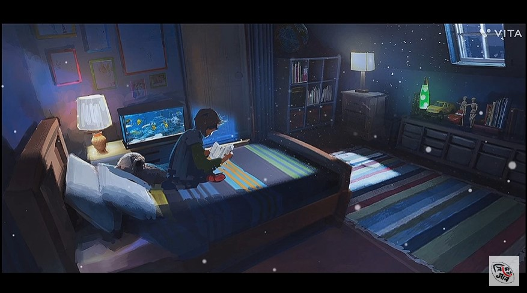

Song credits :
Lyrics,Vocal & Guitar - Indrajit Bala
Video - Arghyadeep Chowdhury
Special Thanks - Subhopriyo Samaddar
Check it out Our Facebook Page 👇

Lyrics :
এই রাত
চলছে এই রাত
চলছে এই রাত
নিস্তব্ধ চারিধার ।
কতো প্রশ্ন করে যায়,
আমার চারিধার!
আজ ঘুম নেই দুচোখে
তারা তাকিয়ে থাকে!
খোঁজে উত্তর গুলো, আর
হাসে আমার চারিধার!
ফেলে আসা রাত গুলো
মনেতো আজ পড়েনা,
এখনের এই রাতটার
কৌতুহল গুলো ছাড়েনা।
চলছে এই রাত
নিস্তব্ধ চারিধার !
কতো প্রশ্ন করে যায়,
আমার চারিধার!
জানি শেষ হবে এ রাত
হবে ক্লান্ত ঝিঝিরা
ঘুম আসবে চোখে আমার
খুঁজবে নতুন প্রশ্ন তার!
গলে যাওয়া মোমগুলো
হয়তো আলো দেবে না,
সাক্ষী হবে রাতটার
উত্তর গুলো ভুলবে না।
চলছে এই রাত
নিস্তব্ধ চারিধার ।
কতো প্রশ্ন করে যায়,
আমার চারিধার।